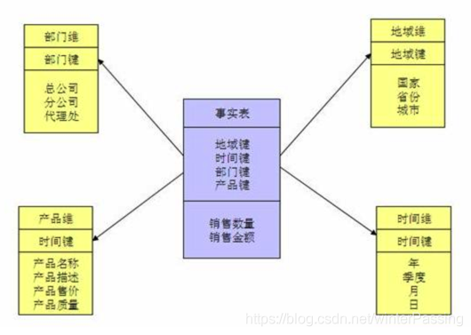
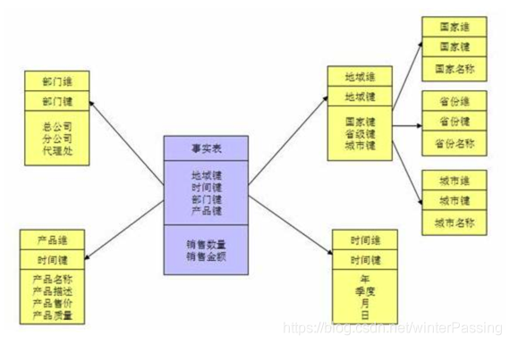
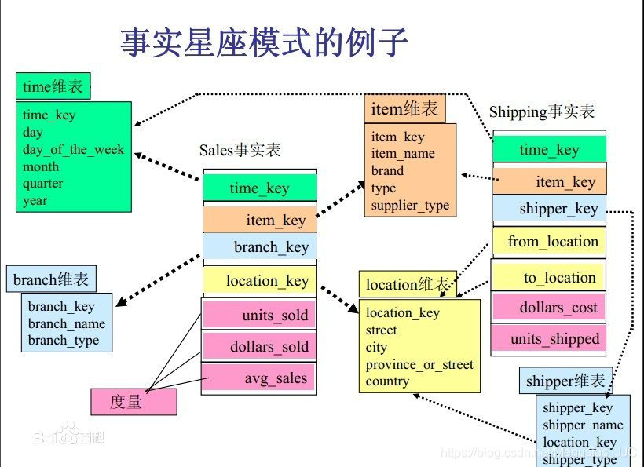
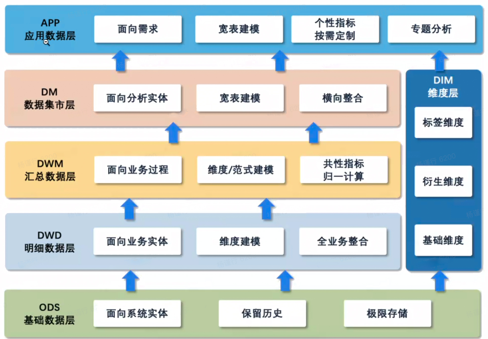
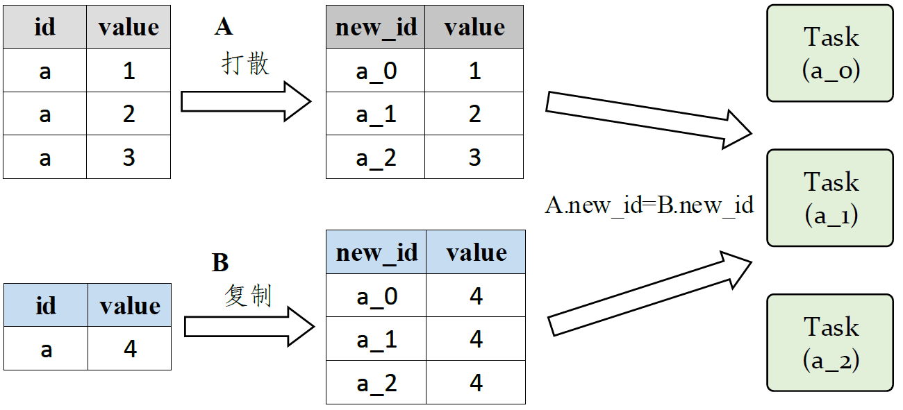

基础概念
Contents
基础概念¶
数据仓库¶
数据仓库建模方法¶
数据模型是抽象描述现实世界的一种工具和方法，是通过抽象的实体及实体之间联系的形式，来表示现实世界中事务的相互关系的一种映射。
有四种模型：ER模型、维度模型、Data Vault模型、Anchor模型。用的较多的是维度模型和ER模型。
ER模型¶
ER模型用实体关系模型描述企业业务，在范式理论上满足3NF。数仓中的3NF是站在企业角度面向主题的抽象，而不是针对某个具体业务流程的实体对象关系的抽象。
采用ER模型建设数据仓库模型的出发点是整合数据，将各个系统中的数据按照主题进行相似性整合，并进行一致性处理。
ER模型特点：
需要全方位了解企业业务数据
实施周期较长
对建模人员要求教高
维度建模¶
维度建模按照事实表和维度表来构建数仓。
维度建模从分析决策的需求出发构建模型，为分析需求服务。重点关注用户如何快速的完成数据分析，可以直观的反应业务模型中的业务问题，需要大量的数据预处理、数据冗余，有较好的大规模复杂查询的响应性能。
基本概念
事实表：在ER模型中抽象出了实体、关系、属性三种类型，每个操作型事件都会产生一个事实表，其中涉及到多个实体，比如：购物下单事件中涉及的主体包括客户、商品、商家，产生可度量值包括商品数量、金额、件数等。发生在现实世界中的操作性事件，其产生的可度量数值，存储在事实表中。从最细粒度级别来看，事实表的一行对应一个度量事件。事实表表示对分析主题的度量。’
事实表中包含了与各个维度表相关联的外键，可与维度表关联。事实表的度量通常是数值类型，且记录数不断增加，表数据量迅速增长。
事实表的设计是以能够正确记录历史信息为准则
维度表：维度就是看待事物的角度，维表一般为单一主键，在ER模型中，实体会带有自己描述性的属性，这些属性就称为维度。比如：商品的产生、颜色、单价等。
每个维度表都包含单独的主键列。维度表行的描述环境应该与事实表行完全对应。维度表通常比较宽，是扁平型的非规范表，包含大量的低粒度的文本属性。
维度表的设计是以能够以合适的角度来聚合主题内容为准则
模型
星形模型：以事实表为中心，所有的维度直接连接在事实表上。由一个事实表和一组维度表组成。也是星型模型的扩展。区别是星座模型中存在多张事实表，不同事实表之间共享维表信息，常用于数据关系更复杂的场景。

由一个事实表和一组维表组成，且所有维表直接与事实表相连。其特点是不存在渐变维度，有一定数据冗余，效率相对较高。在维表设计方面通常采用降维的方式，通过数据冗余来简化模型，以提高模型易用性和分析效率，标准的星型模型只有一层维度
雪花模型：是对星形模型的扩展。雪花模型的维度表可以拥有更细的维度，比星形更规范一点。维护成本较高，且查询是要关联多层维表，性能较低

由一个事实表和多个维表组成，且有一个或多个维表通过其他维表与事实表相连。其特点是数据冗余较少，但由于表连接的增加，导致效率相对较低。其设计通常遵循3NF关系模式，但是往往无法严格遵守，因为需付出的性能成本较高
雪花模型的设计方式是比较符合数据库范式的理念，设计方式比较正规，数据冗余少，但在查询的时候可能需要join多张表从而导致查询效率下降，此外规范化操作在后期维护比较复杂。
星座模型：基于多张事实表，多张事实表共享维度信息

通常基于多个事实表，且多个事实表之间共享一些维度表，往往应用于数据关系比星型模型和雪花模型更复杂的场合
数据仓库大多数时候是比较适合使用星型模型构建底层数据Hive表，通过大量的冗余来提升查询效率
ER和维度模型的对比
维度建模相对能快速上手，快速交付，运营人员只需要根据我们的数据字典，查询自己所属的业务模块对应的业务过程，一个简单的select语句就可以搞定所有事情，但缺点是冗余会较多，不过在当今时代，存储存储可以忽略不计。维度模型是面向业务过程，由于所有主题数据和业务过程数据都已经提前处理好了，在进行查询数据的时候，相对ER模型来讲，就不需要那么多的关联查询，大大提高了执行效率和减低算力、人力成本，但是数据冗余可能会较多，但是将多个源的数据以文本的形式存储在分布式系统中，存储成本（列式存储）并不需要那么多成本。但是从存储、计算、成本、交付、易用性等多方面考虑取平衡值，还是维度模型更实用。
ER模型是完全遵守3NF，当查询数据时，需要进行多表关联查询，这时候随着数据量几百亿几千亿的情况下，会大大的降低执行效率并且算力越来越多，最终导致计算成本都要不断的累加，在存储方法由于规范性好，数据冗余比较小。
数据集市¶
为了特定的应用目的或应用范围，而从数据仓库中独立出来的一部分数据，也可称为部门数据或主题数据（subjectarea）。在数据仓库的实施过程中往往可以从一个部门的数据集市着手，以后再用几个数据集市组成一个完整的数据仓库。需要注意的就是在实施不同的数据集市时，同一含义的字段定义一定要相容，这样在以后实施数据仓库时才不会造成大麻烦。
数据湖¶
数据仓库：主要存储的是以关系型数据库组织起来的结构化数据。数据通过转换、整合以及清理，并导入到目标表中。在数仓中，数据存储的结构与其定义的schema是强匹配的。
数据湖：存储任何类型的数据，包括像图片、文档这样的非结构化数据。数据湖通常更大，其存储成本也更为廉价。存储其中的数据不需要满足特定的schema，数据湖也不会尝试去将特定的schema施行其上。相反的是，数据的拥有者通常会在读取数据的时候解析schema（schema-on-read），当处理相应的数据时，将转换施加其上。
数据分层¶

DIM Dimension 通用维度层 该层主要存储简单、静态、代码类的维表，包括从OLTP层抽取转换维表、根据业务或分析需求沉淀一致性维度，归一化维度属性口径。可贯穿被使用于数仓任一层。
数据运营层 (ODS)
ODS: Operation Data Store 数据准备区, 也称为贴源层。数据仓库源头系统的数据表通常会原封不动的存储一份, 这称为ODS层, 是后续数据仓库加工数据的来源。
ODS Operational Data Store 操作数据层 该层级主要功能是存储从源系统直接获得的数据（数据从数据结构、数据之间的逻辑关系上都与源系统基本保持一致）。实现某些业务系统字段的数据仓库技术处理、少量的基础的数据清洗（比如脏数据过滤、字符集转换、维值处理）、生成增量数据表。依据策略保留历史数据，不直接暴露给应用；外部数仓表同ODS。在这个层次中要描述清楚数据生成的流程图，便于用户了解数据生产的业务背景。需要构建角色、流程、数据的对应关系。该层原则为不做任何处理或尽可能少做处理，保留数据原貌，便于还原、追溯原始数据。
数据仓库层 (DW) DW数据分层, 由下到上为:
DWD: data warehouse details 细节数据层，是业务层与数据仓库的隔离层。主要对ODS数据层做一些数据清洗和规范化的操作。
DWD Data Warehouse Detail 明细数据层 该层的主要功能是基于主题域的划分，面向业务主题、以数据为驱动设计模型，完成数据整合，提供统一的基础数据来源。在该层级保持原有粒度，维度退化，逻辑下沉并封装业务规则，或者轻度汇总，相同实体纵向整合。标准的明细层，屏蔽业务变化，完成数据的清洗、重定义、整合分类功能。
数据清洗: 去除空值、脏数据、超过极限范围的
DWB: data warehouse base
数据基础层, 存储的是客观数据, 一般用作中间层, 可以认为是大量指标的数据层。
DWM(也有叫DWI、DWA) Data Warehouse Model 汇总数据层(或轻度汇总层) 面向分析主题和业务过程的、统一的数据访问层，所有的基础数据、业务规则和业务实体的基础指标库以及多维模型都在这里统一计算口径、统一建模，大量基础指标库以及多维模型在该层实现。该层级以分析需求为驱动进行模型设计，实现跨业务主题域数据的关联计算或者轻度汇总计算，因此会有大数据量的多表关联汇总计算。封装业务规则（衍生计算），或者轻度汇总，加工原子指标和公共衍生指标，通用的汇总表，较强的共用性。所以很多字段不是来自业务系统，而是根据分析需求和业务场景计算出来得。抽象维度和指标，整合信息，口径收敛。
DWS: data warehouse service 数据服务层, / DM，data market
基于DWB上的基础数据, 整合汇总成分析某一个主题域的服务数据层, 一般是宽表。用于提供后续的业务查询, OLAP分析, 数据分发等。 用户行为, 轻度聚合
DM Data Market 数据集市层 数据价值化沉淀，面向分析场景和数据产品需求，连接事实表和维度表形成冗余的多维的宽表。可以加工高度汇总层数据。该层次主要功能是加工多维度冗余的宽表（解决复杂的查询）、多角度分析的深度汇总表。针对具体分析项目、临时业务分析需求等，完成多样化数据模型设计，快速应对业务的变化。考虑快速响应和迭代，直接面向业务产品运营同学的需求，对于不确定的业务模型在该层次开发，比如：dau异动分析。
又称数据集市或宽表。按照业务划分，如流量、订单、用户等，生成字段比较多的宽表，用于提供后续的业务查询，OLAP分析，数据分发等。
主要对ODS/DWD层数据做一些轻度的汇总。
数据服务层/应用层 (ADS) / APP曾
APP(也有叫DWA) Application 应用数据层 该层级的主要功能是提供差异化的数据服务、满足业务方的需求，支持数据集、数据产品、数据服务。
这一层是提供为数据产品使用的结果数据
ADS: applicationData Service应用数据服务, 该层主要是提供数据产品和数据分析使用的数据, 一般会存储在ES、mysq|等系统中供线上系统使用。
我们通过说的报表数据, 或者说那种大宽表, 一般就放在这里
关系型数据库¶
设计三范式¶
为了建立冗余较小、结构合理的数据库，设计数据库时必须遵循一定的规则。在关系型数据库中这种规则就称为范式。范式时符合某一种设计要求的总结。
第一范式：确保每列保持原子性，即要求数据库表中的所有字段值都是不可分解的原子值。而不能是集合，数组，记录等非原子数据项。即实体中的某个属性有多个值时，必须拆分为不同的属性。
第二范式：1NF+确保表中的每列都和主键相关。也就是说在一个数据库表中，一个表中只能保存一种数据，不可以把多种数据保存在同一张数据库表中。
作用：减少了数据库的冗余
例如在员工表中的身份证号码即可实现每个一员工的区分，该身份证号码即为候选键，任何一个候选键都可以被选作主键。在找不到候选键时，可额外增加属性以实现区分，如果在员工关系中，没有对其身份证号进行存储，而姓名可能会在数据库运行的某个时间重复，无法区分出实体时，设计辟如ID等不重复的编号以实现区分，被添加的编号或ID选作主键。
（该主键的添加是在ER（Entity Relationship Diagram，实体-联系图)设计时添加，不是建库时随意添加）。简而言之，第二范式就是在第一范式的基础上**属性完全依赖于主键。**
第三范式：2NF+确保每列都和主键列直接相关，而不是间接相关。
例如，存在一个部门信息表，其中每个部门有部门编号（dept_id）、部门名称、部门简介等信息。那么在员工信息表中列出部门编号后就不能再将部门名称、部门简介等与部门有关的信息再加入员工信息表中。如果不存在部门信息表，则根据第三范式（3NF）也应该构建它，否则就会有大量的数据冗余。
底层数据库¶
索引¶
索引是对数据库表中一或多个列的值进行排序的结构，是帮助MySQL高效获取数据的数据结构
你也可以这样理解：索引就是加快检索表中数据的方法。数据库的索引类似于书籍的索引。在书籍中，索引允许用户不必翻阅完整个书就能迅速地找到所需要的信息。在数据库中，索引也允许数据库程序迅速地找到表中的数据，而不必扫描整个数据库。
MySQL数据库几个基本的索引类型：普通索引、唯一索引、主键索引、全文索引
索引加快数据库的检索速度
索引降低了插入、删除、修改等维护任务的速度
唯一索引可以确保每一行数据的唯一性
通过使用索引，可以在查询的过程中使用优化隐藏器，提高系统的性能
索引需要占物理和数据空间
通常，通过索引查询数据比全表扫描要快，但是是有成本的
使用索引查询不一定能提高查询性能：索引需要空间来存储,也需要定期维护, 每当有记录在表中增减或索引列被修改时,索引本身也会被修改. 这意味着每条记录的INSERT,DELETE,UPDATE将为此多付出4,5 次的磁盘I/O. 因为索引需要额外的存储空间和处理,那些不必要的索引反而会使查询反应时间变慢.
索引范围查询(INDEX RANGE SCAN)适用于两种情况:
基于一个范围的检索,一般查询返回结果集小于表中记录数的30%
基于非唯一性索引的检索
事务¶
事务（Transaction）是并发控制的基本单位。所谓的事务，它是一个操作序列，这些操作要么都执行，要么都不执行，它是一个不可分割的工作单位。事务是数据库维护数据一致性的单位，在每个事务结束时，都能保持数据一致性。
三段锁协议¶
共享锁（share lock）：共享 (S) 用于只读操作，如 SELECT 语句。
如果事务T对数据A加上共享锁后，则其他事务只能对A再加共享锁，不能加排他锁。获准共享锁的事务只能读数据，不能修改数据。
排他锁（exclusive lock）：用于数据修改操作，例如 INSERT、UPDATE 或 DELETE。确保不会同时同一资源进行多重更新。
如果事务T对数据A加上排他锁后，则其他事务不能再对A加任任何类型的封锁。获准排他锁的事务既能读数据，又能修改数据。
**作用：**利用三段锁，可以避免以下问题
丢失修改：两个事务T1和T2读入同一数据并修改，T2提交的结果破坏了T1提交的结果，导致T1的修改被丢失
读脏数据：事务T1对数据D进行修改，事务T2读取到了事务T1修改的数据，接着事务T1发生异常进行回滚，事务T2读取到的就叫做“脏数据”
不可重复读：不可重复读是指事务T1读取数据后，事务T2执行更新操作，使T1无法再现前一次读取结果
数据倾斜¶
定义：Hadoop能够进行对海量数据进行批处理的核心，在于它的分布式思想，也就是多台服务器（节点）组成集群，进行分布式的数据处理。但当大量的数据集中到了一台或者几台机器上计算，这些数据的计算速度远远低于平均计算速度，导致整个计算过程过慢，这种情况就是发生了数据倾斜。
产生机制：无论是MR还是Spark任务进行计算的时候，都会触发Shuffle动作。一些典型的操作如distinct、reduceByKey、groupByKey、join、repartition等都会触发shuffle：一旦触发，Spark就会将相同的key及其value拉到一个节点上。如果有某个key及其对应的数据太多的话，那就会发生明显的单点问题——单个节点处理数据量爆增的情况
Join一个表很小但key集中：分发到某一个或几个Reduce/Stage上的数据远高于平均值
大表与大表，但是分桶的判断字段0值或空值过多：空值由一个Reduce处理很慢
Group by维度太小了 有些值处理太多，所以reduce很耗时
Count Distinct/ sum(distinct key)某特殊值过多，处理特殊值好时
发生原因：
数据频率倾斜——某一个区域的数据量要远远大于其他区域
key分布不均匀
1、某些key的数量过于集中，存在大量相同值的数据
2、存在大量异常值或空值。
唯一值非常少，极少数值有非常多的记录值(唯一值少于几千)
唯一值比较多，这个字段的某些值有远远多于其他值的记录数，但是它的占比也小于百分之一或千分之一
数据大小倾斜——部分记录的大小远远大于平均值。
解决/缓和的办法
**通用：**提高shuffle并行度
set spark.sql.shuffle.partitions= [num_tasks]（默认200），将原本被分配到同一个Task的不同Key分配到不同Task。Group By的时候：可以map端聚合，启动负载均衡：使计算变成了两个mapreduce在第一个中在 shuffle 过程 partition 时随机给 key 打标记，使每个key 随机均匀分布到各个 reduce 上计算，完成部分计算（但相同key没有分配到相同reduce上，所以需要第二次的mapreduce）
第二次回归正常 shuffle，但数据分布不均匀的问题在第一次mapreduce已经有了很大的改善
set hive.map.aggr=true; --在map中会做部分聚集操作，效率更高但需要更多的内存 set hive.groupby.skewindata=true; --默认false，数据倾斜时负载均衡
例子：
--水果字段名为category select count (substr(x.category,1,2)) from (select concat(category,'_',cast(round(10*rand())+1 as string)) from table1 group by concat(category,'_',cast(round(10*rand())+1 as string)) ) x --1阶段聚合 group by substr(x.category,1,2); --2阶段聚合
小表Join大表的时候可以把Reduce Join改成Map Join
原理：mapjoin优化就是在Map阶段完成join工作，而不是像通常的common join在Reduce阶段按照join的列值进行分发数据到每个Reduce上进行join工作。这样避免了Shuffle阶段，从而避免了数据倾斜。
注意：这个操作会将所有的小表全量复制到每个map任务节点，然后再将小表缓存在每个map节点的内存里与大表进行join工作。小表的大小的不能太大，一般也就几百兆，否则会出现OOM报错。
代码
set hive.auto.convert.join = true; -- hive是否自动根据文件量大小，选择将common join转成map join 。 set hive.mapjoin.smalltable.filesize =25000000; --大表小表判断的阈值，如果表的大小小于该值25Mb，则会被判定为小表。则会被加载到内存中运行，将commonjoin转化成mapjoin。一般这个值也就最多几百兆的样子。
开启Skewed Join
hadoop 中默认是使用hive.exec.reducers.bytes.per.reducer = 1000000000
也就是每个节点的reduce 默认是处理1G大小的数据，如果join操作也产生了数据倾斜，可以在hive 中设定
set hive.optimize.skewjoin = true; set hive.skewjoin.key = skew_key_threshold （default = 100000）
建议每次运行比较复杂的sql 之前都可以设一下这个参数. 如果你不知道设置多少，可以就按官方默认的1个reduce 只处理1G 的算法，那么 skew_key_threshold = 1G/平均行长
或者默认直接设成250000000 (差不多算平均行长4个字节)
当我们开启Skew Join之后，在运行时，会对数据进行扫描并检测哪个key会出现倾斜，对于会倾斜的key，用map join做处理，不倾斜的key正常处理。
数据打散（重新设计key）
在map阶段时给key加上一个随机数，有了随机数的key就不会被大量的分配到同一节点(小几率)，待到reduce后再把随机数去掉即可；
将大表(A)中的id加上后缀(即“id_0”-“id_2”)，起到“打散”的作用。为了结果正确，小表B中的id需要将每条数据都“复制”多份。此时再执行join操作，将会产生三个task，每个task只需要关联一条数据即可，起到了分散的作用
SELECT id, value, concat(id, round(rand() * 10000)%3) as new_id
经过处理之后再使用new_id来作为聚合条件
大表Join大表的时候可以大表拆分，倾斜部分单独处理（比如非常多的卖家、但很多卖家的订单很少）
中间表分桶排序后join
partition
比如现在是按省份进行汇总数据，如果只是简单的按省份去分（这并没有错），那么数据肯定会倾斜，因为各省的数据天然不一样。我们可以通过历史数据、抽样数据或者一些常识，对数据进行人工分区，让数据按照我们自定义的分区规则比较均匀的分配到不同的task中。
常见的分区方式：
随机分区：每个区域的数据基本均衡，简单易用，偶尔出现倾斜，但是特征同样也会随机打散。
轮询分区：绝对不会倾斜，但是需要提前预知分成若干份，进行轮询。
hash散列：可以针对某个特征进行hash散列，保证相同特征的数据在一个区，但是极容易出现数据倾斜。
范围分区：需要排序，临近的数据会被分在同一个区，可以控制分区数据均匀。
开性能
增加jvm（Java Virtual Machine：Java虚拟机）内存，这适用于变量值非常少的情况，这种情况下，往往只能通过硬件的手段来进行调优，增加jvm内存可以显著的提高运行效率；
增加reduce的个数，这适用于变量值非常多的情况，这种情况下最容易造成的结果就是大量相同key被partition到一个分区，从而一个reduce执行了大量的工作；